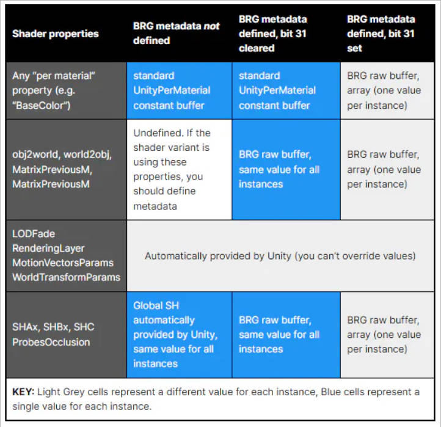
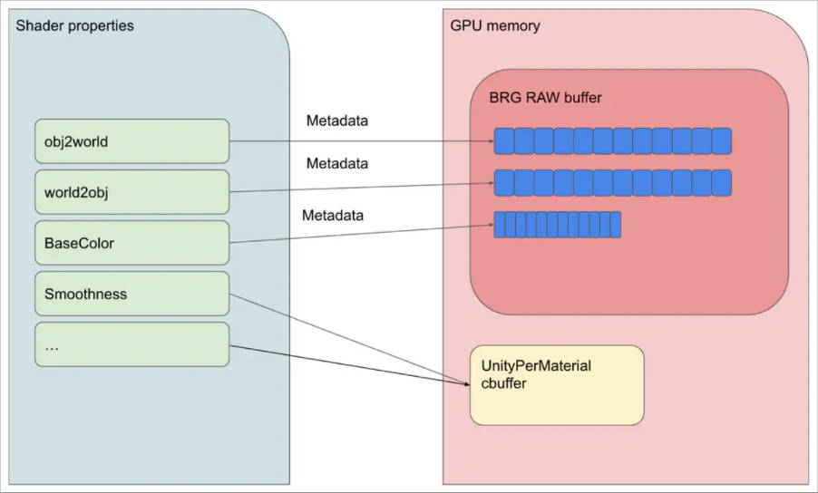
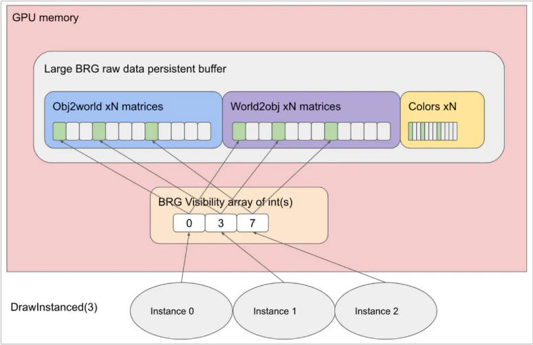
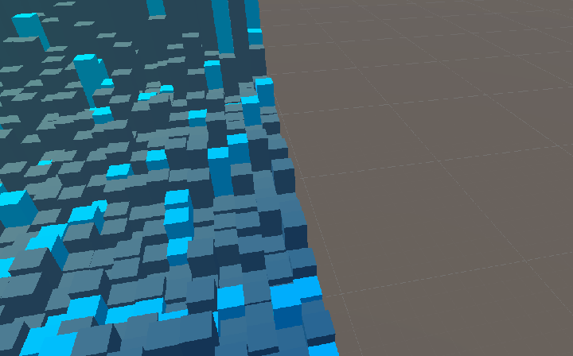
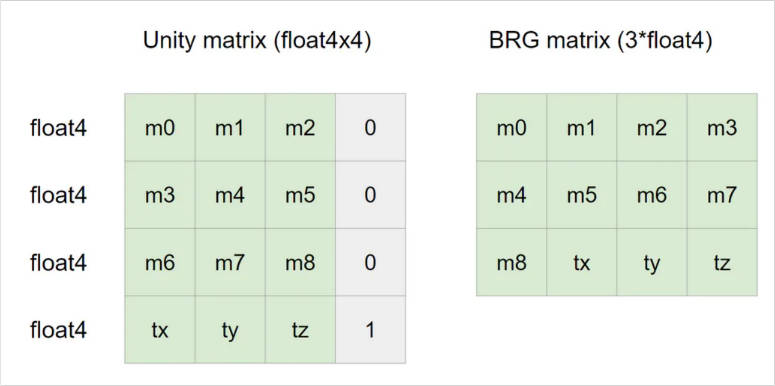
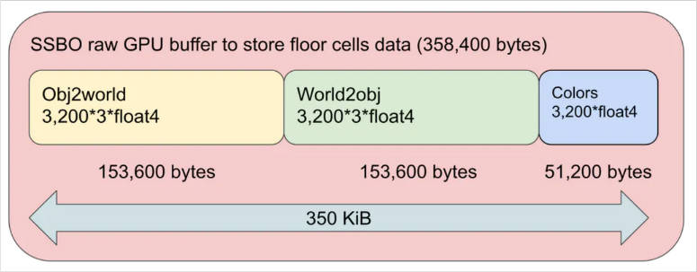
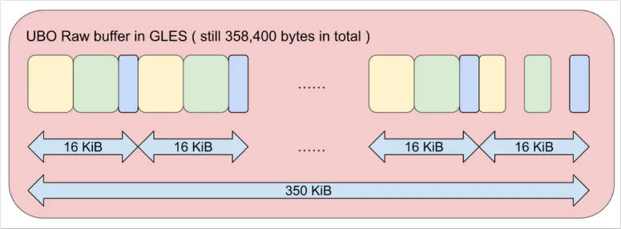
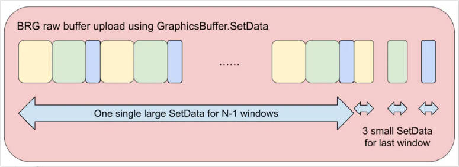

UnityBatchRendererGroup
Table of Contents
- BatchRendererGroup Manual
- BatchRendererGroup sample: Achieve high frame rate even on budget devices
- Introducing the sample
- Setting the scene
- Rendering
- Why not use classic Graphics.DrawMeshInstanced?
- What is BatchRendererGroup?
- BRG shader data model
- Properties per instance – or not
- BRG metadata
- BRG culling and visibility indices
- Rendering floor cells
- Rendering explosion debris
- BRG matrix format
- Animating floor cells
- BRG BatchID
- The devil’s in the details: GLES exception
- Uploading data
- Main BRG user callback
- Draw commands generation
- Wrapping up: Dive deeper in the forums
- 参考资料
UnityBatchRendererGroup note.
<!– more –>
BatchRendererGroup Manual
BatchRendererGroup (BRG) 是一个 API，适用于使用 SRP 和 SRPBatcher 的项目。其用于实现高性能的自定义渲染。
BRG 是适用于以下情况：
- 渲染 DOTS Entities。有关 Entities 如何使用 BRG 的更多信息，请参阅 Entities Graphics Performance
- Entities Graphics Performance https://docs.unity3d.com/Packages/com.unity.entities.graphics@1.2/manual/entities-graphics-performance.html
- Entities Graphics Performance https://docs.unity3d.com/Packages/com.unity.entities.graphics@1.2/manual/entities-graphics-performance.html
- 渲染大量环境对象，在这些对象中使用独立的 GameObjects 将过于占用资源。例如，程序化放置的植物或岩石。
- 渲染自定义 terrain patches。您可以使用不同的网格或材质来显示不同的 LOD。
How BatchRendererGroup works
为了渲染到屏幕上，BRG 会生成绘制命令(draw commands)，draw commands 是一个 BRG 特定的概念，其中包含 Unity 高效创建优化的、实例化的 draw calls 所需的一切。
为了确定何时渲染 draw command 中的实例，BRG 使用过滤器设置(filter settings)。filter settings 控制何时渲染实例本身，以及何时渲染每个实例的某些方面，例如其 shadows 和 motion vectors。
由于相同的 filter settings 通常可以应用于大量 draw commands，因此 BRG 使用 draw ranges 将 filter settings 应用于 a range of draw commands。a draw range 将一系列连续的 draw commands 与一个 filter settings 实例组合在一起，这些 filter settings 应用于这些 draw commands。如果 filter settings 确定 Unity 不应该渲染 draw commands，则 draw ranges 特别有用，因为这使得 Unity 能够高效地跳过 draw ranges 内的每个 draw command。
对哪些实例在哪些绘制调用中没有限制。可以多次使用不同的网格和材质来渲染同一个实例 (即具有相同实例索引和 batchID 的 object)。一个有用的示例是使用不同的材质绘制不同的子网格，但使用相同的实例索引来共享诸如变换矩阵之类的属性。
Technical limitations
在大多数情况下，Unity 将 一个 draw command 转化为单个平台级实例化 draw call，一个 draw command 对应于一个 SRP 中的 DrawRenderers 调用。但是，当图形 API 的 draw calls 大小限制低于 draw command 的 visibleCount 时，就无法转化为单个 draw call 了。在这种情况下，Unity 会将 draw command 拆分为多个实例化 draw calls 。
Getting started with BatchRendererGroup
Requirements and compatibility
渲染管线兼容性
URP HDRP 或自定义的 SRP，并且项目需要使用 SRPBatcher
平台兼容性
支持 BRG 的平台如下：
- Windows using DirectX 11
- Windows using DirectX 12
- Windows using Vulkan
- Universal Windows Platform
- Linux using Vulkan
- macOS using Metal
- iOS
- Android (Vulkan and OpenGL ES 3.x)
- PlayStation 4
- PlayStation 5
- Xbox One
- Xbox Series X and Xbox Series S
- Nintendo Switch
Setting up your project for BatchRendererGroup
在使用 BRG 之前，你的项目必须支持它。BRG 对项目的要求如下：
- 开启 SRP Batcher
- 保留 BRG 着色器变体。 Edit > Project Settings > Graphics, 将 BatchRendererGroup variants 设置为 Keep all.
- 如果项目使用 URP，最佳做法是在 Edit > Project Settings > URP Global Setting 中禁用 Strip Unused Variants。这有助于避免 Unity 剥离必要的 DOTS Instancing variants。
- 允许 unsafe code。在 Player Setting 中开启 Allow unsafe Code。
注意：批处理渲染组使用 DOTS Instancing shaders，但它不需要任何 DOTS packages。该名称反映了新的面向数据的方式，也有助于与现有的 Hybrid Renderer compatible shaders 向后兼容。
Creating a renderer with BatchRendererGroup
Initializing a BatchRendererGroup object
使用 BRG 进行渲染的第一步是创建一个 BatchRendererGroup 实例并使用 OnPerformCulling 的实现对其进行初始化。
OnPerformCulling 回调是 BRG 的主要入口点，每当 Unity 剔除可见对象时，它都会调用该回调。有关它接收的参数的信息，请参阅 OnPerformCulling。通常，OnPerformCulling 回调需要执行两个任务：
- 可见性剔除，根据 BatchCullingContext 参数确定其哪些实例是可见的。
- 输出实际的 draw commands 以渲染这些实例。为此，你需要写入 BatchCullingOutput 参数。
在简单的实现中，可以在 OnPerformCulling 回调中直接执行这些任务，但对于高性能实现，最佳做法是在 Burst 作业中完成大部分工作。OnPerformCulling 回调应该返回一个 JobHandle，该 JobHandle 在 job 将输出写入 BatchCullingOutput 参数后完成。如果你的实现不使用作业，你可以返回一个空的 JobHandle。
请参阅以下代码示例，了解如何创建 BatchRendererGroup 对象并使用最小的 OnPerformCulling 回调对其进行初始化，该回调可以编译。
using System; using Unity.Collections; using Unity.Collections.LowLevel.Unsafe; using Unity.Jobs; using UnityEngine; using UnityEngine.Rendering; public class SimpleBRGExample : MonoBehaviour { private BatchRendererGroup m_BRG; private void Start() { m_BRG = new BatchRendererGroup(this.OnPerformCulling, IntPtr.Zero); } private void OnDisable() { m_BRG.Dispose(); } public unsafe JobHandle OnPerformCulling( BatchRendererGroup rendererGroup, BatchCullingContext cullingContext, BatchCullingOutput cullingOutput, IntPtr userContext) { // This example doesn't use jobs, so it can return an empty JobHandle. // Performance-sensitive applications should use Burst jobs to implement // culling and draw command output. In this case, this function would return a // handle here that completes when the Burst jobs finish. return new JobHandle(); } }
使用 OnPerformCulling 创建 draw commands 之前，你需要为你的 BatchRendererGroup 对象提供你想绘制的 meshes，以及 meshes 使用的 materials。更多信息请参考下节 Registering meshes and materials.
Registering meshes and materials
Mesh 和 Mateiral 是 Unity 中的托管 C# 对象，你不能在 Burst C# 代码中使用它们。要将它们用于 BRG 绘制命令，你必须在 BRG 中预先注册。
使用 BatchRendererGroup.RegisterMesh 注册 Mesh，使用 BatchRendererGroup.RegisterMaterial 注册 Material。这些函数分别返回 BatchMeshID 和 BatchMaterialID，它们是包含 Burst 兼容句柄的普通数据结构。它们是强类型化的，有助于防止意外使用错误的句柄类型造成的错误。
你可以在任何时间注册 Mesh 和 Material 对象，包括运行时。唯一的要求是：
- 你需要在 BatchRendererGroup 可以使用它们进行渲染之前注册 Mesh 和 Material 对象。
- 材质必须支持 DOTS Instancing。
你也可以在不再需要网格和材质对象时取消注册它们。如果你想卸载任何网格或材质对象，则需要这样做。BatchRendererGroup.Dispose 会自动取消注册所有已注册的资产。
注意：你不能序列化 BatchMeshID 或 BatchMaterialID。它们仅对你注册它们的 BatchRendererGroup 有效，如果你取消注册它们，或者 BatchRendererGroup 不再存在，它们就会失效。如果某些操作强制 Unity 卸载 Mesh 或 Material 对象，BatchMeshID 和 BatchMaterialID 也会失效，这种情况发生在 Unity 卸载 Mesh 或 Material 对象所属的场景时。
可以多次注册同一个网格或材质对象。这在你想注册网格或材质而无需知道哪些网格和材质已经注册的情况下很有用。在这种情况下，BatchRenderer 会以以下方式维护注册次数的内部计数：
- 每次注册 Mesh 或 Material 对象时，BatchRendererGroup 都会将其引用计数增加 1。
- 每次取消注册 Mesh 或 Material 对象时，BatchRendererGroup 都会将其引用计数减少 1。如果这导致引用计数达到 0，BatchRendererGroup 会取消注册网格或材质。如果你想在将来的绘制命令中使用 Mesh 或 Material，你必须再次注册它。
- 使用已注册的 Mesh 或 Material 调用 RegisterMesh 或 RegisterMaterial 会返回与上次调用相同的 BatchMeshID 或 BatchMaterialID。但是，如果 BatchRendererGroup 完全取消注册了 Mesh 或 Material，则再次注册它可能会返回不同的 ID。
注意：BRG 会在帧中的第一个 OnPerformCulling 回调方法之后检查网格或材质对象的修改。这意味着 Unity 会考虑在此之前发生的任何修改。这包括你在第一个回调本身中进行的更改，但不包括在回调调度的任何作业中发生的更改。在此之后修改网格或材质对象会导致未定义的行为。
请参阅以下代码示例，了解如何使用 BatchRendererGroup 对象注册 Mesh 和 Material。
using System; using Unity.Collections; using Unity.Collections.LowLevel.Unsafe; using Unity.Jobs; using UnityEngine; using UnityEngine.Rendering; public class SimpleBRGExample : MonoBehaviour { public Mesh mesh; public Material material; private BatchRendererGroup m_BRG; private BatchMeshID m_MeshID; private BatchMaterialID m_MaterialID; private void Start() { m_BRG = new BatchRendererGroup(this.OnPerformCulling, IntPtr.Zero); m_MeshID = m_BRG.RegisterMesh(mesh); m_MaterialID = m_BRG.RegisterMaterial(material); } private void OnDisable() { m_BRG.Dispose(); } public unsafe JobHandle OnPerformCulling( BatchRendererGroup rendererGroup, BatchCullingContext cullingContext, BatchCullingOutput cullingOutput, IntPtr userContext) { // This simple example doesn't use jobs, so it can return an empty JobHandle. // Performance-sensitive applications should use Burst jobs to implement // culling and draw command output. In this case, this function would return a // handle that completes when the Burst jobs finish. return new JobHandle(); } }
在创建任何 draw commands 之前，你需要提供数据（如变换矩阵）以用于 draw command 实例。为了提供用于每个实例的数据，BatchRendererGroup 使用了一个名为 batches 的概念。有关更多信息，请参阅下一主题 Creating batches.
Creating batches
BatchRenderGroup (BRG) 不会自动提供任何实例数据。实例数据包括许多通常为 GameObjects 内置的属性，例如 transform matrices、light probe coefficients 和 lightmap texture coordinates。这意味着，除非你自己提供实例数据，否则诸如环境光之类的功能将无法正常工作。为此，你需要添加和配置 batches。一个 Batch 就是一组实例，其中每个实例对应于要渲染的单个事物。实例实际代表什么取决于你要渲染的内容。例如，在道具对象 renderer 中，一个实例可以代表一个道具，而在 terrain renderer 中，它可以代表一个 terrain patch。
每个 batch 都有一组元数据值和一个 GraphicsBuffer，batch 中的每个实例都共享该 GraphicsBuffer。要加载实例的数据，典型过程是使用元数据值从 GraphicsBuffer 中的正确位置加载数据。UNITY_ACCESS_DOTS_INSTANCED_PROP 系列着色器宏与该方案一起工作（请参阅 Accessing DOTS Instanced properties）。但是，你不需要使用这种每个实例的数据加载方案，如果你愿意，你可以自由地实现自己的方案。
- Accessing DOTS Instanced properties https://docs.unity3d.com/Documentation/Manual/dots-instancing-shaders.html#accessing-dots-instanced-properties
使用 BatchRendererGroup.AddBatch 来创建 batch。该方法接收一个元数据值数组以及一个 GraphicsBuffer 的句柄。当 Unity 从 batch 中渲染实例时，它会将元数据值传递给着色器，并将 GraphicsBuffer 绑定为 unity_DOTSInstanceData。对于着色器中使用了，但你在创建 batch 时未传入的元数据值，Unity 会将其设置为零。
你无法在创建 batch 后修改 batch 元数据值，因此你传递给 batch 的任何元数据值都是最终的。如果你需要更改任何元数据值，请创建一个新的 batch 并删除旧的 batch。你可以随时修改批次的 GraphicsBuffer。只需要使用 SetBatchBuffer。这在需要调整缓冲区大小并在现有缓冲区空间不足时分配更大的缓冲区时很有用。
注意：你不需要在创建 batch 时指定 batch 的大小。相反，你必须确保着色器能够正确处理传递给它的实例索引。对于 Unity 提供的 SRP shader，这意味着缓冲区中必须存在你传递的索引处的有效实例数据。
请参阅以下代码示例，了解如何使用元数据值和实例数据的 GraphicsBuffer 创建 batch。
using System; using Unity.Collections; using Unity.Collections.LowLevel.Unsafe; using Unity.Jobs; using UnityEngine; using UnityEngine.Rendering; public class SimpleBRGExample : MonoBehaviour { public Mesh mesh; public Material material; private BatchRendererGroup m_BRG; private GraphicsBuffer m_InstanceData; private BatchID m_BatchID; private BatchMeshID m_MeshID; private BatchMaterialID m_MaterialID; // Some helper constants to make calculations more convenient. private const int kSizeOfMatrix = sizeof(float) * 4 * 4; private const int kSizeOfPackedMatrix = sizeof(float) * 4 * 3; private const int kSizeOfFloat4 = sizeof(float) * 4; private const int kBytesPerInstance = (kSizeOfPackedMatrix * 2) + kSizeOfFloat4; private const int kExtraBytes = kSizeOfMatrix * 2; private const int kNumInstances = 3; // The PackedMatrix is a convenience type that converts matrices into // the format that Unity-provided SRP shaders expect. struct PackedMatrix { public float c0x; public float c0y; public float c0z; public float c1x; public float c1y; public float c1z; public float c2x; public float c2y; public float c2z; public float c3x; public float c3y; public float c3z; public PackedMatrix(Matrix4x4 m) { c0x = m.m00; c0y = m.m10; c0z = m.m20; c1x = m.m01; c1y = m.m11; c1z = m.m21; c2x = m.m02; c2y = m.m12; c2z = m.m22; c3x = m.m03; c3y = m.m13; c3z = m.m23; } } private void Start() { m_BRG = new BatchRendererGroup(this.OnPerformCulling, IntPtr.Zero); m_MeshID = m_BRG.RegisterMesh(mesh); m_MaterialID = m_BRG.RegisterMaterial(material); AllocateInstanceDataBuffer(); PopulateInstanceDataBuffer(); } private void AllocateInstanceDataBuffer() { m_InstanceData = new GraphicsBuffer(GraphicsBuffer.Target.Raw, BufferCountForInstances(kBytesPerInstance, kNumInstances, kExtraBytes), sizeof(int)); } private void PopulateInstanceDataBuffer() { // Place a zero matrix at the start of the instance data buffer, so loads from address 0 return zero. var zero = new Matrix4x4[1] { Matrix4x4.zero }; // Create transform matrices for three example instances. var matrices = new Matrix4x4[kNumInstances] { Matrix4x4.Translate(new Vector3(-2, 0, 0)), Matrix4x4.Translate(new Vector3(0, 0, 0)), Matrix4x4.Translate(new Vector3(2, 0, 0)), }; // Convert the transform matrices into the packed format that the shader expects. var objectToWorld = new PackedMatrix[kNumInstances] { new PackedMatrix(matrices[0]), new PackedMatrix(matrices[1]), new PackedMatrix(matrices[2]), }; // Also create packed inverse matrices. var worldToObject = new PackedMatrix[kNumInstances] { new PackedMatrix(matrices[0].inverse), new PackedMatrix(matrices[1].inverse), new PackedMatrix(matrices[2].inverse), }; // Make all instances have unique colors. var colors = new Vector4[kNumInstances] { new Vector4(1, 0, 0, 1), new Vector4(0, 1, 0, 1), new Vector4(0, 0, 1, 1), }; // In this simple example, the instance data is placed into the buffer like this: // Offset | Description // 0 | 64 bytes of zeroes, so loads from address 0 return zeroes // 64 | 32 uninitialized bytes to make working with SetData easier, otherwise unnecessary // 96 | unity_ObjectToWorld, three packed float3x4 matrices // 240 | unity_WorldToObject, three packed float3x4 matrices // 384 | _BaseColor, three float4s // Calculates start addresses for the different instanced properties. unity_ObjectToWorld starts // at address 96 instead of 64, because the computeBufferStartIndex parameter of SetData // is expressed as source array elements, so it is easier to work in multiples of sizeof(PackedMatrix). uint byteAddressObjectToWorld = kSizeOfPackedMatrix * 2; uint byteAddressWorldToObject = byteAddressObjectToWorld + kSizeOfPackedMatrix * kNumInstances; uint byteAddressColor = byteAddressWorldToObject + kSizeOfPackedMatrix * kNumInstances; // Upload the instance data to the GraphicsBuffer so the shader can load them. m_InstanceData.SetData(zero, 0, 0, 1); m_InstanceData.SetData(objectToWorld, 0, (int)(byteAddressObjectToWorld / kSizeOfPackedMatrix), objectToWorld.Length); m_InstanceData.SetData(worldToObject, 0, (int)(byteAddressWorldToObject / kSizeOfPackedMatrix), worldToObject.Length); m_InstanceData.SetData(colors, 0, (int)(byteAddressColor / kSizeOfFloat4), colors.Length); // Set up metadata values to point to the instance data. Set the most significant bit 0x80000000 in each // which instructs the shader that the data is an array with one value per instance, indexed by the instance index. // Any metadata values that the shader uses that are not set here will be 0. When a value of 0 is used with // UNITY_ACCESS_DOTS_INSTANCED_PROP (i.e. without a default), the shader interprets the // 0x00000000 metadata value and loads from the start of the buffer. The start of the buffer is // a zero matrix so this sort of load is guaranteed to return zero, which is a reasonable default value. var metadata = new NativeArray<MetadataValue>(3, Allocator.Temp); metadata[0] = new MetadataValue { NameID = Shader.PropertyToID("unity_ObjectToWorld"), Value = 0x80000000 | byteAddressObjectToWorld, }; metadata[1] = new MetadataValue { NameID = Shader.PropertyToID("unity_WorldToObject"), Value = 0x80000000 | byteAddressWorldToObject, }; metadata[2] = new MetadataValue { NameID = Shader.PropertyToID("_BaseColor"), Value = 0x80000000 | byteAddressColor, }; // Finally, create a batch for the instances and make the batch use the GraphicsBuffer with the // instance data as well as the metadata values that specify where the properties are. m_BatchID = m_BRG.AddBatch(metadata, m_InstanceData.bufferHandle); } // Raw buffers are allocated in ints. This is a utility method that calculates // the required number of ints for the data. int BufferCountForInstances(int bytesPerInstance, int numInstances, int extraBytes = 0) { // Round byte counts to int multiples bytesPerInstance = (bytesPerInstance + sizeof(int) - 1) / sizeof(int) * sizeof(int); extraBytes = (extraBytes + sizeof(int) - 1) / sizeof(int) * sizeof(int); int totalBytes = bytesPerInstance * numInstances + extraBytes; return totalBytes / sizeof(int); } private void OnDisable() { m_BRG.Dispose(); } public unsafe JobHandle OnPerformCulling( BatchRendererGroup rendererGroup, BatchCullingContext cullingContext, BatchCullingOutput cullingOutput, IntPtr userContext) { // This simple example doesn't use jobs, so it can just return an empty JobHandle. // Performance-sensitive applications should use Burst jobs to implement // culling and draw command output. In this case, this function would return a // handle here that completes when the Burst jobs finish. return new JobHandle(); } }
现在你已经使用 BatchRendererGroup 对象注册了所有必需的资源，你可以创建 draw commands 了。有关更多信息，请参阅下一主题，Creating draw commands。
Creating draw commands
在 BatchRendererGroup.OnPerformCulling 回调中创建 draw commands。具体来说，你使用回调的 BatchCullingOutput 参数。此参数包含一个具有单个元素的 NativeArray。这种布局意味着你可以直接修改数组元素的内容，而无需 Unity 不必要地复制数据。NativeArray 中的元素是 BatchCullingOutputDrawCommands 结构体，其中包含实际的 draw commands。
你的 OnPerformCulling 实现可以生成任意数量的 draw commands。一个只使用单个网格和材质的简单实现可能只输出一个 draw command，而一个更复杂的实现可能输出数千个 draw commands，每个 draw command 都使用不同的网格和材质。
注意：为了提供最大的灵活性，Unity 不会预先分配 BatchCullingOutputDrawCommands 输出结构体中的数组，而是将它们存储为原始指针，以便你可以轻松地从 Burst 作业中分配和使用它们。你必须使用 UnsafeUtility.Malloc 和 Allocator.TempJob 分配器来分配数组。回调中不应该释放内存。相反，Unity 在使用 draw commands 完成渲染后会释放内存。
请参阅以下代码示例，了解如何创建绘制命令。
using System; using Unity.Collections; using Unity.Collections.LowLevel.Unsafe; using Unity.Jobs; using UnityEngine; using UnityEngine.Rendering; public class SimpleBRGExample : MonoBehaviour { // ...... public unsafe JobHandle OnPerformCulling( BatchRendererGroup rendererGroup, BatchCullingContext cullingContext, BatchCullingOutput cullingOutput, IntPtr userContext) { // UnsafeUtility.Malloc() requires an alignment, so use the largest integer type's alignment // which is a reasonable default. int alignment = UnsafeUtility.AlignOf<long>(); // Acquire a pointer to the BatchCullingOutputDrawCommands struct so you can easily // modify it directly. var drawCommands = (BatchCullingOutputDrawCommands*)cullingOutput.drawCommands.GetUnsafePtr(); // Allocate memory for the output arrays. In a more complicated implementation, you would calculate // the amount of memory to allocate dynamically based on what is visible. // This example assumes that all of the instances are visible and thus allocates // memory for each of them. The necessary allocations are as follows: // - a single draw command (which draws kNumInstances instances) // - a single draw range (which covers our single draw command) // - kNumInstances visible instance indices. // You must always allocate the arrays using Allocator.TempJob. drawCommands->drawCommands = (BatchDrawCommand*)UnsafeUtility.Malloc(UnsafeUtility.SizeOf<BatchDrawCommand>(), alignment, Allocator.TempJob); drawCommands->drawRanges = (BatchDrawRange*)UnsafeUtility.Malloc(UnsafeUtility.SizeOf<BatchDrawRange>(), alignment, Allocator.TempJob); drawCommands->visibleInstances = (int*)UnsafeUtility.Malloc(kNumInstances * sizeof(int), alignment, Allocator.TempJob); drawCommands->drawCommandPickingInstanceIDs = null; drawCommands->drawCommandCount = 1; drawCommands->drawRangeCount = 1; drawCommands->visibleInstanceCount = kNumInstances; // This example doens't use depth sorting, so it leaves instanceSortingPositions as null. drawCommands->instanceSortingPositions = null; drawCommands->instanceSortingPositionFloatCount = 0; // Configure the single draw command to draw kNumInstances instances // starting from offset 0 in the array, using the batch, material and mesh // IDs registered in the Start() method. It doesn't set any special flags. drawCommands->drawCommands[0].visibleOffset = 0; drawCommands->drawCommands[0].visibleCount = kNumInstances; drawCommands->drawCommands[0].batchID = m_BatchID; drawCommands->drawCommands[0].materialID = m_MaterialID; drawCommands->drawCommands[0].meshID = m_MeshID; drawCommands->drawCommands[0].submeshIndex = 0; drawCommands->drawCommands[0].splitVisibilityMask = 0xff; drawCommands->drawCommands[0].flags = 0; drawCommands->drawCommands[0].sortingPosition = 0; // Configure the single draw range to cover the single draw command which // is at offset 0. drawCommands->drawRanges[0].drawCommandsBegin = 0; drawCommands->drawRanges[0].drawCommandsCount = 1; // This example doesn't care about shadows or motion vectors, so it leaves everything // at the default zero values, except the renderingLayerMask which it sets to all ones // so Unity renders the instances regardless of mask settings. drawCommands->drawRanges[0].filterSettings = new BatchFilterSettings { renderingLayerMask = 0xffffffff, }; // Finally, write the actual visible instance indices to the array. In a more complicated // implementation, this output would depend on what is visible, but this example // assumes that everything is visible. for (int i = 0; i < kNumInstances; ++i) drawCommands->visibleInstances[i] = i; // This simple example doesn't use jobs, so it returns an empty JobHandle. // Performance-sensitive applications are encouraged to use Burst jobs to implement // culling and draw command output. In this case, this function returns a // handle here that completes when the Burst jobs finish. return new JobHandle(); } }
这是 BRG 的最终完整代码示例。如果你将此组件附加到 GameObject，在 Inspector 中设置一个网格和一个与 DOTS 实例化兼容的材质，并进入播放模式，Unity 将使用该材质渲染网格的三个实例。
DOTS Instancing shaders
为了高效地渲染大量实例，BRG 使用了一种名为 DOTS Instancing 的新的 shader 实例化模式。BRG 使用的每个着色器都必须支持 DOTS Instancing。在传统的实例化着色器中，着色器会为常量或 uniform buffer 中的每个实例化属性传递一个数组，这样每个数组中的每个元素都包含绘制中单个实例的属性值。在 DOTS 实例化着色器中，Unity 为每个 DOTS 实例化属性传递一个 32 位整数给着色器。这个 32 位整数称为 metadata value(元数据值)。这个整数可以代表任何你想要的东西，但通常它代表缓冲区中一个偏移量，从该偏移量开始，着色器加载着色器正在渲染的实例的属性数据。
与传统实例化相比，DOTS Instancing 具有许多优势，包括：
- 实例数据存储在 GraphicsBuffer 中，并在 GPU 上保持持久性，这意味着 Unity 不需要在每次渲染实例时都重新设置它。仅在实例实际发生变化时设置数据，可以在实例数据很少或根本不发生变化的情况下显著提高性能。这比传统实例化效率高得多，传统实例化需要引擎在每一帧为每个实例设置所有数据。
- 设置实例数据的过程与设置绘制调用是分开的。这使得绘制调用设置变得轻量级且高效。BRG 通过 SRP Batcher 的特殊快速路径实现了这一点，该路径仅为每个绘制调用执行最少的工作量。这项工作的责任转移到你身上，让你对每个绘制调用中要渲染的内容有更多控制权。
- 绘制调用的大小不再受限于常量或 uniform buffer 中可以容纳多少实例数据。这使得 BRG 可以使用单个绘制调用渲染更大的实例数量。
注意：实例索引的数量仍然限制了绘制调用的大小，因为每个索引仍然需要一些数据。但是，索引消耗的内存远远少于一组完整的实例化属性，这意味着更多的实例可以容纳在常量或 uniform buffer 中。例如，每个索引需要 16 个字节，因此如果特定平台上缓冲区的内存限制为 64kb，则 4096 个索引可以容纳在缓冲区中。 - 如果每个实例对给定属性使用相同的值，则可以使所有实例从内存中的相同位置加载该值。这节省了内存和为每个实例复制该值所花费的 GPU 周期数。
Supporting DOTS Instancing
为了支持 DOTS 实例化，着色器需要执行以下操作：
- 使用着色器模型 4.5 或更高版本。指定 #pragma target 4.5 或更高版本。
- 支持 DOTS_INSTANCING_ON 关键字。使用 #pragma multi_compile _ DOTS_INSTANCING_ON 声明它。
- 声明至少一个 DOTS Instanced 属性块，每个块至少有一个属性。有关更多信息，请参阅下面 Declaring DOTS Instanced properties.
注意：Unity 在 URP 和 HDRP 中提供的 Shader Graphs 和 shaders 都支持 DOTS 实例化。
Declaring DOTS Instanced properties
为了加载实例数据，例如 transform matrices，shader 需要定义 DOTS Instanced 属性。下面是一个简单的 DOTS Instanced 属性块的示例：
UNITY_DOTS_INSTANCING_START(MaterialPropertyMetadata)
UNITY_DOTS_INSTANCED_PROP(float4, Color)
UNITY_DOTS_INSTANCING_END(MaterialPropertyMetadata)
要标记属性块的开始和结束，请使用 UNITY_DOTS_INSTANCING_START 和 UNITY_DOTS_INSTANCING_END 宏，后跟块的名称。此示例使用名称 MaterialPropertyMetadata。有三个允许的块名称：
BuiltinPropertyMetadata
MaterialPropertyMetadata
UserPropertyMetadata
着色器可以声明每个块的一个，因此一个 DOTS 实例化着色器可以有零到三个这样的块。Unity 定义的着色器代码不使用 UserPropertyMetadata，因此这个名称保证可以供你自由使用。URP 和 HDRP 为它们提供的每个着色器定义 BuiltinPropertyMetadata，并且也为大多数着色器定义 MaterialPropertyMetadata，因此最佳实践是使用 UserPropertyMetadata。你的自定义着色器可以使用所有三个可能的名称，甚至可以同时使用所有三个名称。
该块可以包含任意数量的 DOTS 实例化属性定义，格式如下：
UNITY_DOTS_INSTANCED_PROP(PropertyType, PropertyName)
PropertyType 可以是任何 HLSL 内置类型（如 uint、float4、float4x4 或 int2x4），除了布尔向量，PropertyName 是 DOTS 实例化属性的名称。DOTS 实例化属性与常规材质属性(regular material properties )完全分开，你可以为它们提供与另一个常规材质属性相同的名称。这是可能的，因为 UNITY_DOTS_INSTANCED_PROP 宏会生成 Unity 识别的特殊常量名称，这些名称不会与其他属性名称冲突。Unity 提供的着色器会为 DOTS Instanced 属性提供与常规材质属性相同的名称，但你不需要遵循此约定。
在内部，Unity 为着色器提供的每个 DOTS 实例化属性提供一个 32 位整数元数据值。当你的代码调用 BatchRendererGroup.AddBatch 来创建与绘制相关的批次时，Unity 会设置元数据值。如果 Unity 未设置元数据值，则其默认值为 0。着色器还可以访问 ByteAddressBuffer unity_DOTSInstanceData，Unity 会将其设置为你作为参数传递给 BatchRendererGroup.AddBatch 的 GraphicsBuffer。这个缓冲区通常是着色器加载实例数据的缓冲区。多个批次可以共享一个 GraphicsBuffer，但每个批次也可以为 unity_DOTSInstanceData 使用自己的独立 GraphicsBuffer。
注意：Unity 不会自动提供任何 DOTS 实例化数据。你有责任确保每个批次的 unity_DOTSInstanceData 缓冲区包含正确的数据。实例数据必须包含许多 Unity 通常为游戏对象提供的属性，例如 transform matrices, light probe coefficients, and lightmap 纹理坐标。
Accessing DOTS Instanced properties
要访问 DOTS 实例化属性，你的着色器可以使用 Unity 提供的访问宏之一。访问宏假定 unity_DOTSInstanceData 中的实例数据使用以下布局：
- 元数据值的 31 个最低有效位包含批次中第一个实例在 unity_DOTSInstanceData 缓冲区内的字节地址。
- 如果元数据值的最高有效位为 0，则每个实例都使用索引为 0 的实例的值。这意味着每个实例都直接从元数据值中的字节地址加载。在这种情况下，缓冲区只需要存储一个值，而不是每个实例一个值。
- 如果元数据值的最高有效位为 1，则该地址应该包含一个数组，你可以使用 AddressOfInstance0 + sizeof(PropertyType) * instanceID 找到实例索引 instanceID 的值。在这种情况下，你应该确保每个渲染的实例索引在缓冲区中都有有效的数据。否则可能会发生越界访问和未定义行为。
你也可以直接设置元数据值，当你使用自定义数据源(如纹理)，并且该数据源不使用上述布局的话这很有用。
Unity 提供以下访问宏：
- UNITY_ACCESS_DOTS_INSTANCED_PROP(PropertyType, PropertyName)
使用上面描述的布局从 unity_DOTSInstanceData 加载的值。Unity 提供的着色器使用此版本用于没有默认值可回退的 DOTS Instanced built-in 属性。 - UNITY_ACCESS_DOTS_INSTANCED_PROP_WITH_DEFAULT(PropertyType, PropertyName)
返回与 UNITY_ACCESS_DOTS_INSTANCED_PROP 相同的值，但如果元数据值的最高有效位为零，则返回默认值。默认值是与 DOTS 实例化属性具有相同名称的常规材质属性的值，这就是为什么 Unity 提供的着色器使用 DOTS 实例化属性与常规材质属性具有相同名称的约定的原因。当使用默认值时，访问宏根本不访问 unity_DOTSInstanceData。Unity 提供的着色器使用此访问宏用于 DOTS 实例化材质属性，因此加载会回退到材质上设置的值。 - UNITY_ACCESS_DOTS_INSTANCED_PROP_WITH_CUSTOM_DEFAULT(PropertyType, PropertyName, DefaultValue)
返回与 UNITY_ACCESS_DOTS_INSTANCED_PROP 相同的值，除非元数据值的最高有效位为零，在这种情况下，此宏将返回 DefaultValue 而不是访问 unity_DOTSInstanceData。 - UNITY_DOTS_INSTANCED_METADATA_NAME(PropertyType, PropertyName)
直接返回元数据值，而不访问任何内容。这对于自定义实例数据加载方案很有用。
除了访问宏之外，Unity 还提供了着色器函数，这些函数直接从 draw command 数据中加载常量的值。Unity 提供的着色器使用这些函数。
Unity 提供以下着色器函数：
LoadDOTSInstancedData_RenderingLayer： 返回绘制命令的 renderingLayerMask。
LoadDOTSInstancedData_MotionVectorsParams： 返回绘制命令的运动向量生成模式。这被格式化为一个 float4，这是 Unity 着色器所期望的。
LoadDOTSInstancedData_WorldTransformParams：返回是否以翻转三角形顶点顺序绘制实例。
LoadDOTSInstancedData_LightData： 返回场景的 main Directional Light 是否对实例处于激活状态。main light 可能因多种原因而被停用，例如，如果光已包含在光照贴图中。
LoadDOTSInstancedData_LODFade： 返回设置 LODCrossFade 标志时设置的 8 位交叉淡入淡出值。如果未设置标志，则返回值未定义。
Access macro examples
本节包含 Unity 提供的访问宏的示例，以及有关如何使用这些宏访问 Per-instance 数据和 Constant 数据的说明。
Per-instance
在这个例子中：
Color 的元数据值为 0x80001000。
实例索引为 5。
实例 0 的数据从地址 0x1000 开始。
实例 5 的数据位于地址 0x1000 + 5 * sizeof(float4) = 0x1050。
因为最高有效位已经设置，所以访问器宏不会加载默认值。这意味着 c0、c1 和 c2 将具有相同的值，从 unity_DOTSInstanceData 地址 0x1050 加载。
void ExamplePerInstance() { // rawMetadataValue 将包含 0x80001000 uint rawMetadataValue = UNITY_DOTS_INSTANCED_METADATA_NAME(float4, Color); float4 c0 = UNITY_ACCESS_DOTS_INSTANCED_PROP(float4, Color); float4 c1 = UNITY_ACCESS_DOTS_INSTANCED_PROP_WITH_DEFAULT(float4, Color); float4 c2 = UNITY_ACCESS_DOTS_INSTANCED_PROP_WITH_CUSTOM_DEFAULT(float4, Color, float4(1, 2, 3, 4)); }
Constant
在这个例子中：
Color 的元数据值为 0x00001000。
实例索引为 5。
实例 0 的数据从地址 0x1000 开始。
最高有效位没有设置，所以实例 5 的数据与实例 0 位于同一个地址。
因为最高有效位没有设置，所以回退到默认值的访问器宏不会访问 unity_DOTSInstanceData。这意味着：
- c0 将包含来自 unity_DOTSInstanceData 地址 0x1000 的值。
- c1 将包含常规材质属性 Color 的值，如果 Color 属性不存在，则会导致编译错误。
- c2 将包含 (1, 2, 3, 4)，因为它是作为显式默认值传递的。
void ExampleConstant() { // rawMetadataValue 将包含 0x00001000 uint rawMetadataValue = UNITY_DOTS_INSTANCED_METADATA_NAME(float4, Color); float4 c0 = UNITY_ACCESS_DOTS_INSTANCED_PROP(float4, Color); float4 c1 = UNITY_ACCESS_DOTS_INSTANCED_PROP_WITH_DEFAULT(float4, Color); float4 c2 = UNITY_ACCESS_DOTS_INSTANCED_PROP_WITH_CUSTOM_DEFAULT(float4, Color, float4(1, 2, 3, 4)); }
Advanced DOTS Instanced properties usage
UNITY_DOTS_INSTANCED_PROP 宏有 3 种变体：
UNITY_DOTS_INSTANCED_PROP_OVERRIDE_DISABLED(PropertyType, PropertyName)
UNITY_DOTS_INSTANCED_PROP_OVERRIDE_SUPPORTED(PropertyType, PropertyName)
UNITY_DOTS_INSTANCED_PROP_OVERRIDE_REQUIRED(PropertyType, PropertyName)
这些宏允许你在编译时指定属性是否可以实例化。它允许访问宏（如 UNITY_ACCESS_DOTS_INSTANCED_PROP）扩展到更优化的代码，并且对低端平台有重大影响。
以下是一个使用上面所有宏变体的 DOTS 实例化属性块的示例：
UNITY_DOTS_INSTANCING_START(MaterialPropertyMetadata)
UNITY_DOTS_INSTANCED_PROP_OVERRIDE_SUPPORTED(float4, Color)
UNITY_DOTS_INSTANCED_PROP_OVERRIDE_DISABLED(float4, SpecColor)
UNITY_DOTS_INSTANCED_PROP_OVERRIDE_REQUIRED(float4, EmissionColor)
UNITY_DOTS_INSTANCING_END(MaterialPropertyMetadata)
以下是此声明的含义：
Color 属性可以实例化也可以不实例化。正确的加载路径根据属性元数据的高位动态选择。
SpecColor 属性不可实例化。此声明不会在常量缓冲区中添加 uint32 字段。它等同于根本不声明任何内容。它可以用于快速禁用属性的实例化，而无需修改代码的其他部分。
EmissionColor 属性必须实例化。该属性始终从 unity_DOTSInstanceData 缓冲区加载，并且在访问该属性时永远不会发出动态分支。
默认情况下，UNITY_DOTS_INSTANCED_PROP 与 UNITY_DOTS_INSTANCED_PROP_OVERRIDE_SUPPORTED 相同。此默认行为可以通过取消注释 “com.unity.render-pipelines.core\ShaderLibrary\UnityDOTSInstancing.hlsl” 中的定义 UNITY_DOTS_INSTANCED_PROP_OVERRIDE_DISABLED_BY_DEFAULT 来更改。当你这样做时，定义将被启用，并且 UNITY_DOTS_INSTANCED_PROP 将与 UNITY_DOTS_INSTANCED_PROP_OVERRIDE_DISABLED 相同。
注意：当取消注释定义 UNITY_DOTS_INSTANCED_PROP_OVERRIDE_DISABLED_BY_DEFAULT 时，你可能需要清除 Library 文件夹以确保着色器被正确重新编译。
在低端设备上，实例化属性可能会产生重大的性能成本。例如，从 SSBO 加载可能比正常的常量缓冲区加载慢得多。这是因为在许多低端设备上，这种类型的缓冲区加载通过纹理采样器进行，而常量缓冲区加载使用更快的硬件，除非使用动态索引来访问 Uniform Buffer。实例化属性始终使用动态索引加载，因为它取决于属性元数据，这意味着它们在低端设备上始终通过纹理采样器进行。为了更好地优化你的项目以适应低端设备，你可以默认禁用属性实例化。为此，启用定义 UNITY_DOTS_INSTANCED_PROP_OVERRIDE_DISABLED_BY_DEFAULT，这将默认禁用属性实例化。完成此操作后，你就可以仅对需要实例化的属性手动启用属性实例化。
Details
最佳实践是将所有 unity_DOTSInstanceData 缓冲区的最初 64 字节初始化为零，并将其保留为未使用状态。这是因为 在 batch 创建期间，Unity 使用的所有未指定元数据值的默认元数据值为零。具体来说，当着色器从 UNITY_ACCESS_DOTS_INSTANCED_PROP 宏加载一个 zero metadata value 时，着色器将从地址零加载此值，因为实例索引将被忽略。确保最初 64 字节（这是最大值类型（float4x4 矩阵）的大小）为零，可以保证此类加载可预测地返回零的结果。否则，着色器可能会加载不可预测的内容，具体取决于地址零处的内容。
在使用 DOTS Instancing 时，Unity 提供的 Shader Graphs 和着色器使用变换矩阵的特殊约定。为了节省 GPU 内存和带宽，它们仅使用 12 个浮点数而不是完整的 16 个浮点数来存储这些矩阵，因为四个浮点数始终是常量。这些着色器期望以这样一种方式格式化的浮点数，即矩阵中每一列的 x、y 和 z 按顺序存储。换句话说，前三个浮点数是第一列的 x、y 和 z，接下来的三个浮点数是第二列的 x、y 和 z，依此类推。矩阵不存储每一列的 w 元素。受此影响的变换矩阵是：
unity_ObjectToWorld
unity_WorldToObject
unity_MatrixPreviousM
unity_MatrixPreviousMI
以下代码示例包含一个结构体，它将常规的四乘四矩阵转换为 12 个浮点数约定。
struct PackedMatrix { public float c0x; public float c0y; public float c0z; public float c1x; public float c1y; public float c1z; public float c2x; public float c2y; public float c2z; public float c3x; public float c3y; public float c3z; public PackedMatrix(Matrix4x4 m) { c0x = m.m00; c0y = m.m10; c0z = m.m20; c1x = m.m01; c1y = m.m11; c1z = m.m21; c2x = m.m02; c2y = m.m12; c2z = m.m22; c3x = m.m03; c3y = m.m13; c3z = m.m23; } }
BatchRendererGroup sample: Achieve high frame rate even on budget devices
在本文中，我们描述了一个小型射击游戏示例，该示例对多个交互对象执行动画和渲染。许多演示仅针对高端 PC 制作，但这里的目标是在预算有限的手机上使用 GLES 3.0 实现高帧率。此示例使用了 BatchRendererGroup、Burst Compiler 和 C# Job System。它运行在 Unity 2022.3 中，不需要 entities 或 entities.graphics DOTS 包。
Introducing the sample
这个示例在预算有限的 2019 年三星 Galaxy A51（使用 Mali G72-MP3 GPU）上以稳定的 60 fps 运行。图形 API 设置为 GLES 3.0。你可以通过从 GitHub 下载项目来研究代码并尝试在你喜欢的平台上运行它。你只需要使用 Unity 2022.3。
在本文中，我们主要关注 BatchRendererGroup 和示例类 BRG_Container.cs。你还可以研究 BRG_Background.cs 和 BRG_Debris.cs 类中的动画和物理代码。
Setting the scene
在深入研究如何制作之前，让我们先看看我们看到的内容。
- 背景地板由许多立方体构成。所有的盒子都执行上下移动的动画。
- 主船在屏幕上水平移动并向彩色球体发射导弹。（你可以通过点击屏幕更快地发射导弹。）
- 当导弹飞过地板时，磁场会稍微抬起并突出显示地板单元。它还会将地面碎片抛向空中。
- 当导弹击中球体时，它会爆炸成彩色碎片。
- 当碎片击中地板时，地板上的碰撞单元会闪烁白色。击中地板单元的碎片越多，单元的颜色越暗。此外，碎片的重量会在地面上留下凹痕。
Rendering
地板单元和碎片都是由立方体组成的。每个立方体都有不同的位置和颜色。我们希望使用 CPU 来动画化和管理所有内容，以便使地板和碎片之间的交互更容易。（碎片不仅仅是视觉上的装饰，所以不能仅通过 GPU 完成。）为了渲染，我们不会为每个项目创建一个 GameObject，以避免在低端移动设备上不必要的性能损失。相反，我们使用了新引入的 BatchRendererGroup API。
Why not use classic Graphics.DrawMeshInstanced?
Graphics.DrawMeshInstanced 是一种方便且快速的方法，可以在不同位置渲染许多相似的网格。然而，与 BatchRendererGroup API 相比，它有以下限制：
- 需要提供一个托管内存数组来存储矩阵，因此可能会产生垃圾回收。此外，即使着色器不需要（例如，使用 URP/unlit），逆矩阵也是由 CPU 计算的。
- 如果你想自定义 obj2world 矩阵以外的任何属性（例如，每个实例都有一个颜色），你需要编写自己的自定义着色器，或者使用 Shader Graph。
- 矩阵或自定义数据必须在每次绘制时上传到 GPU 内存。你不能使用 Graphics.DrawMeshInstanced 持久化 GPU 内存数据。根据上下文，这可能会对性能造成巨大影响。
What is BatchRendererGroup?
BatchRendererGroup（或 BRG）是一个 API，可以从 C# 高效地生成绘制命令并生成 GPU 实例化绘制调用。由于它不使用托管内存，你还可以使用 Burst 编译器生成命令。
- 优点
- 能够快速从 Burst jobs 生成 DrawInstanced 命令
- 使用持久的大型 GPU buffer 来存储每个实例的自定义属性
- 支持包括 OpenGL ES 3.0 及以上在内的多种平台
- 与标准 SRP 着色器（lit 和 unlit）兼容，不需要编写自定义着色器
- 缺点
- 你需要自己生成绘制命令的最优批次
- 你必须自己管理 GPU 内存和自定义属性的偏移分配
BRG shader data model
BRG 使用特定的 GPU 数据布局和专用的着色器变体。着色器变体可以从标准常量缓冲区（UnityPerMaterial）或自定义的大型 GPU 缓冲区（BRG 原始缓冲区）中获取数据。你需要管理如何将数据存储在原始缓冲区中，该缓冲区是一个着色器存储缓冲对象（SSBO，或字节地址缓冲区）。默认的 BRG 数据布局是数组结构（SoA）类型。
Properties per instance – or not
你可以实例化材质的任何属性，而无需创建自定义着色器。在示例中，我们希望实例化 obj2world 矩阵（用于定位立方体）、world2obj 矩阵（用于照明）和每个立方体实例的 BaseColor（因为每个地板单元或碎片都有自己的颜色）。所有其他属性对于所有立方体都是相同的（例如，光滑度值），你可以使用元数据描述哪些属性将具有每实例的自定义值。
BRG metadata
BRG 元数据是一个可选的 32 位值，你可以为每个着色器属性设置。它告诉着色器代码如何从 GPU 内存中加载属性值以及从哪里加载。位 0-30 定义属性在 BRG 原始缓冲区中的偏移量，位 31 表示属性值是所有实例相同的，还是偏移量是一个数组的开始，每个实例有一个值。
BRG 元数据的确切含义还取决于着色器属性类型。让我们总结所有可能性： （该表格列出了着色器属性及其在不同 BRG 元数据条件下的行为）

- 浅灰色单元格: 表示每个实例的值不同
- 蓝色单元格: 表示每个实例的值相同
通过使用 BRG 元数据，你可以描述哪些属性在每个实例中具有自定义值（例如，obj2world，world2obj，baseColor）。所有其他属性对于所有实例具有完全相同的值（并且仍然使用经典的 UnityPerMaterial 常量缓冲区作为数据源。例如，Smoothness）。

BRG culling and visibility indices
与 Graphics.DrawMeshInstanced 不同，BRG 使用持久的 GPU 内存缓冲区。假设你在原始缓冲区中有 10 个立方体位置和颜色，但只有 0、3 和 7 号立方体是可见的。你只想绘制三个立方体，但需要着色器正确读取这些立方体的位置和颜色。为此，BRG 着色器使用一个小的附加间接缓冲区。这个可见性缓冲区只是一个“int”数组，你在生成绘制命令时填充。
在这个例子中，你需要填充一个包含 {0,3,7} 的 int 数组，然后可以生成一个包含三个实例的 BRG 绘制命令。

用于获取“baseColor”属性的着色器代码如下：
if (metadata_baseColor & (1 << 31)) { // 从可见性缓冲区间接获取真实索引 int visibleId = brg_visibility_array[GPU_instanceId]; uint base = (metadata_baseColor & 0x7ffffffc); uint offset = visibleId * sizeof(baseColor); // 从 BRG 原始缓冲区中的自定义数组获取数据 baseColor = brg_raw_buffer.Load(base + offset); } else { // 从 UnityPerMaterial 获取数据（如常） baseColor = UnityPerMaterial.baseColor; }
超越示例：
由于你可以实例化 SRP 着色器（unlit、simplelit、lit）的任何属性，所有材质属性都有一个“if metadata&(1<<31”)分支。即使你不需要每个实例的自定义光滑度值，这也会带来一些性能开销。在示例中，我们只希望实例化 baseColor。你可以创建一个 Shader Graph，其中只有颜色会被定义为 BRG 可实例化。因此，生成的代码中只有颜色属性有繁重的数据获取间接操作。这样着色器在低端 GPU 上运行时会稍微快一些。
Rendering floor cells
在我们的游戏示例中，地板由 32x100 的单元格组成，总共有 3,200 个单元格。每个单元格都有位置、高度和颜色，并且这些单元格在相机静止的情况下滚动。当一行滚出视野时，我们会插入一行新的 32 个单元格。

上图展示了，当整行滚出视野时，会插入一行新的单元格。新单元格使用随机高度和颜色。你可以在示例中的`BRG_Background.InjectNewSlice()`方法中查看这一过程。
由于在任何时候都有 3,200 个单元格，因此实际上不需要剔除（所有单元格始终在相机视野内）。要定位每个单元格，你需要为每个单元格提供一个`obj2world`矩阵、一个用于照明的逆矩阵和一个颜色。为了渲染完整的地板，我们将使用一个`BRG`绘制命令。
Rendering explosion debris

上图展示了，所有碎片都有简单的重力物理效果，并与地板单元格互动。所有内容都在 CPU 上使用 Burst C# jobs 运行。
示例中的碎片由小立方体组成，每个立方体都有位置、颜色和绕垂直轴的旋转。这与地板单元格非常相似。为此，我们创建了`BRG_Container.cs`类。该类管理一个`BRG`对象，用于渲染地板单元格或爆炸碎片。所有物理动画和互动都使用 C#代码，通过`BRG_Debris.cs`完成。
与地板单元格不同，碎片的数量在每帧中是变化的。在初始化时，你需要为`BRG_Container`指定最大 item 数。在我们的示例中，碎片的最大数量是 16,384 个（每次爆炸由 1,024 个碎片立方体组成），我们使用异步作业在重力场中执行碎片动画。当碎片撞击地板单元格时，它会通过挖入（digging into）地面进行互动。
BRG matrix format
为了优化 GPU 内存存储和带宽，`BRG`使用`float3x4`来存储矩阵，而不是`float4x4`。请记住，原始缓冲区中的`BRG`矩阵是 48 字节，而不是 64 字节。

上图显示，`BRG`矩阵只有 48 字节（即三个`float4`），以提高 GPU 带宽。
原始缓冲区看起来像这样：

上图显示：一个 350 KiB 的 SSBO 原始缓冲区包含 3,200 个实例的数据，使用 SoA 布局。
提示：碎片的原始缓冲区数据与地板数据相似，因为它也使用三个自定义属性（`obj2world`、`world2obj`和颜色）。碎片的最大数量是 16,384 个，这意味着原始缓冲区为 112x16,384 字节，或 1.75 MiB。大多数时候并不会渲染所有碎片，这取决于给定时间内存在的碎片立方体数量。
Animating floor cells
我们有一个 358,400 字节的 GPU 图形缓冲区。由于动画是在 CPU 上完成的，我们还在系统内存中分配了一个类似的缓冲区（CPU 可以在系统内存中全速处理数据）。让我们将这个第二缓冲区称为 GPU 内存的“影子副本”。C#代码将使用正弦函数对地板单元格和影子副本中的碎片进行动画处理。当动画完成后，我们使用`GraphicsBuffer.SetData` API 将影子副本缓冲区上传到 GPU。
进一步优化：优化 GPU 渲染通常意味着优化数据量。在我们的示例中，我们使用标准的现有 SRP 着色器。这就是为什么我们使用三个`float4`来表示矩阵，一个`float4`来表示颜色。你可以进一步优化，编写自定义着色器以减少数据大小，或者使用 32 位的地板单元格高度值。
如果你希望继续优化，可以使用单元格索引来计算其世界位置，然后在着色器中计算矩阵和逆矩阵。最后，使用 32 位整数来存储颜色。最终，每个 item 上传 8 字节而不是 112 字节。这将导致 GPU 数据上传速度提高 14 倍。这需要重写着色器获取数据的代码。
BRG BatchID
任何`BRG`绘制命令都需要一个`MeshID`、`MaterialID`和`BatchID`。前两个很容易理解，而`BatchID`更为微妙。将`BatchID`视为“一种批次”。要渲染地板，你需要注册一种批次，定义如下：
- “unity_ObjectToWorld”属性是从`BRG`原始缓冲区偏移量 0 开始的数组
- “unity_WorldToObject”属性是从偏移量 153,600 开始的数组
- “_BaseColor”属性是从偏移量 307,200 开始的数组
在创建时注册这种批次的代码如下所示：
int objectToWorldID = Shader.PropertyToID("unity_ObjectToWorld"); int worldToObjectID = Shader.PropertyToID("unity_WorldToObject"); int colorID = Shader.PropertyToID("_BaseColor"); var batchMetadata = new NativeArray<MetadataValue>(3, Allocator.Temp, NativeArrayOptions.UninitializedMemory); batchMetadata[0] = CreateMetadataValue(objectToWorldID, 0, true); // 矩阵 batchMetadata[1] = CreateMetadataValue(worldToObjectID, 3200 * 3 * 16, true); // 逆矩阵 batchMetadata[2] = CreateMetadataValue(colorID, 3200 * 3 * 16 * 2, true); // 颜色 m_batchId = m_BatchRendererGroup.AddBatch(batchMetadata, m_GPUPersistentRawBuffer.bufferHandle, 0, 0);
我们在创建时得到`m_batchId`，然后可以在每个`BRG`绘制命令中使用它（这样着色器就知道如何获取该批次的数据）。
提示：`BatchRendererGroup.AddBatch`不是一个渲染命令。它用于注册一种批次，以便将来的渲染命令使用。
The devil’s in the details: GLES exception
到目前为止，我们可以对地板单元格进行动画处理，将影子副本系统内存缓冲区上传到 GPU，并使用一个包含 3,200 个实例的 DrawCommand 渲染所有单元格。
这在大多数平台上都可以工作：DirectX、Vulkan、Metal 和各种游戏主机，但不能在 GLES 上工作。问题在于，大多数 GLES 3.0 设备无法在顶点阶段访问 SSBO（即 GL_MAX_VERTEX_SHADER_STORAGE_BLOCKS 值为 0）。因此，当图形 API 设置为 GLES 时，BRG 将使用常量缓冲区或 UBO 来存储原始数据。
这增加了约束：常量缓冲区可以是任何大小，但在着色器运行时只有一小部分（一个窗口）是可见的。窗口大小取决于硬件和驱动程序，但广泛接受的值是 16 KiB。
提示：在 UBO 模式下，你应该始终使用 BatchRendererGroup.GetConstantBufferMaxWindowSize() API 来获取正确的 BRG 窗口大小。
让我们看看如果我们想在 GLES 上运行代码会发生什么变化。对于地板单元格，总数据量为 350 KiB。我们不能执行一个 DrawInstanced(3,200)，因为着色器无法一次看到 350 KiB。因此，我们必须在 UBO 中拆分数据，以最大化每次绘制的实例数量，适应 16 KiB 的块。一个地板单元格为 112 字节（两个矩阵和一个颜色），所以你可以在 16 KiB 的块中容纳 16,384 除以 112，即 146 个实例。要渲染 3,200 个实例，我们需要发出 21 个 DrawInstanced(146) 和一个最后的 DrawInstanced(134)。
现在，350KiB 的 UBO 将被拆分为 22 个 16KiB 的窗口块，如下所示：

上图所示：在 GLES 中，原始缓冲区是 UBO（不是 SSBO）。3,200 个实例的数据被拆分为 22 个窗口。每个 DrawInstanced(146) 将从 16 KiB 区域获取数据。注意，最后一个窗口只包含 134 个实例，这就是为什么最后的黄色、绿色和蓝色区域之间有一个小间隙。
提示：在 UBO 模式下，每个窗口偏移量应对齐到 BatchRendererGroup.GetConstantBufferOffsetAlignment()。典型的对齐值范围为 4 到 256 字节。
在 GLES 中，由于 UBO 和 16 KiB 窗口，你需要注册 22 个 BatchID 以存储每个窗口的偏移量。然后初始化代码需要一个循环：
// 使用正确的偏移量为每个 16KiB 窗口注册一个 BatchID m_batchIDs = new BatchID[m_windowCount]; for (int b = 0; b < m_windowCount; b++) { batchMetadata[0] = CreateMetadataValue(objectToWorldID, 0, true); // 矩阵 batchMetadata[1] = CreateMetadataValue(worldToObjectID, m_maxInstancePerWindow * 3 * 16, true); // 逆矩阵 batchMetadata[2] = CreateMetadataValue(colorID, m_maxInstancePerWindow * 3 * 2 * 16, true); // 颜色 int offset = b * m_alignedGPUWindowSize; m_batchIDs[b] = m_BatchRendererGroup.AddBatch(batchMetadata, m_GPUPersistentInstanceData.bufferHandle, (uint)offset, (uint)m_alignedGPUWindowSize); }
提示：为了在游戏示例中支持 GLES（UBO）和其他图形 API（SSBO），BRG_Container.cs 在初始化时设置了一些变量。在 SSBO 模式下，m_windowCount 为 1，m_alignedGPUWindowSize 是总缓冲区大小。在 UBO 模式下，m_alignedGPUWindowSize 是 16 KiB，m_windowCount 包含 16 KiB 块的数量。（16 KiB 值是为了可读性。使用 GetConstantBufferMaxWindowSize() API 获取正确的值。）
Uploading data
一旦 CPU 更新了系统内存中的所有矩阵和颜色，你就可以将数据上传到 GPU。这是通过 BRG_Container.UploadGpuData 函数完成的。由于 SoA 数据模型，你不能上传单个内存块。对于碎片，缓冲区有 16,384 个 items。在 GLES 模式下，这意味着如果屏幕上有 16,384 个碎片，则需要 113 个 16 KiB 的窗口。
但如果在给定帧中只有 5,300 个碎片立方体呢？因为每个窗口有 146 个 items，这意味着前 36 个连续的 16 KiB 窗口应该上传，因此你可以使用一个 SetData（36x16 KiB）。在最后一个窗口中，只应显示 44 个碎片立方体。要上传 44 个矩阵、逆矩阵和颜色，请使用三个 SetData 命令。最后，应该发出四个 SetData 命令。

上图所示：最多需要四个 GfxBuffer.SetData 命令来上传 N 个 items
提示：即使在 SSBO 模式下，如果项目数量少于最大值（例如，5,300 个碎片，而最大为 16,384 个），也需要三个 SetData 命令。你可以查看 BRG_Container.UploadGpuData(int instanceCount) 以了解实现细节。
Main BRG user callback
BRG 的主要入口点是你在创建时提供的剔除回调函数。原型如下：
public JobHandle OnPerformCulling(BatchRendererGroup rendererGroup, BatchCullingContext cullingContext, BatchCullingOutput cullingOutput, IntPtr userContext)
此回调中的代码负责两件事：
- 将所有绘制命令生成到输出 BatchCullingOut 结构中
- 在你的剔除代码中使用（或不使用）BatchCullingContext 只读结构中提供的信息
注意：回调返回一个 JobHandle 以防你想启动一个异步作业来执行这些操作。引擎将在需要结果时使用它进行同步，因此你的命令生成代码不会阻塞主线程。
BatchCullingContext 包含相机矩阵、相机视锥体平面等信息。基本上，所有你需要剔除并生成更少绘制命令的数据。在示例中，所有对象都在相机视野内（地板单元格和碎片），因此不需要使用剔除代码。
BatchCullingOutputDrawCommands 结构包含各种数据，包括数组。用户有责任为这些数组分配 native memory。引擎负责在数据被消耗后释放该内存（你分配，Unity 负责释放）。内存分配应为 Allocator.TempJob 类型。
private static T* Malloc<T>(uint count) where T : unmanaged { return (T*)UnsafeUtility.Malloc( UnsafeUtility.SizeOf<T>() * count, UnsafeUtility.AlignOf<T>(), Allocator.TempJob); }
你应该分配的第一个数组是可见性 int 数组。在示例中，由于我们假设所有内容都是可见的，我们只需用递增值填充可见性 int 数组，例如 {0,1,2,3,4,…}。
Draw commands generation
BRG 绘制命令几乎是 GPU DrawInstanced 调用。最重要的数组是 BatchDrawCommand。假设当前帧中有 4,737 个碎片立方体。
在 GLES 模式中，m_maxInstancePerWindow 为 146。你可以使用 m_instanceCount 除以 m_maxInstancePerWindow 的 ceiling value 来计算绘制命令的数量并分配缓冲区：
int drawCommandCount = (m_instanceCount + m_maxInstancePerWindow - 1) / m_maxInstancePerWindow; drawCommands.drawCommands = Malloc<BatchDrawCommand>((uint)drawCommandCount);
为了避免在多个绘制命令中重复类似的参数，BatchCullingOutputDrawCommands 具有一个 BatchDrawRange 结构数组。你可以在 BatchDrawRange.filterSettings 中设置各种参数，例如 renderingLayerMask、接收阴影标志等。由于所有绘制命令将共享相同的渲染设置，你可以分配单个 DrawCommandRange 结构，该结构将从绘制命令 0 开始应用，并包含所有 drawCommandCount 命令。
drawCommands.drawRanges[0] = new BatchDrawRange { drawCommandsBegin = 0, drawCommandsCount = (uint)drawCommandCount, filterSettings = new BatchFilterSettings { renderingLayerMask = 1, layer = 0, motionMode = MotionVectorGenerationMode.Camera, shadowCastingMode = m_castShadows ? ShadowCastingMode.On : ShadowCastingMode.Off, receiveShadows = true, staticShadowCaster = false, allDepthSorted = false } };
然后，填充绘制命令。每个 BatchDrawCommand 包含一个 meshID、materialID 和 batchID（用于知道如何使用元数据）。它还包含可见性 int 数组缓冲区中的起始偏移量。由于在我们的上下文中不需要任何视锥剔除，我们将可见性数组填充为 {0,1,2,3,…}。然后所有绘制命令将引用相同的 {0,1,2,3,…} 间接索引，因此每个 BatchDrawCommand 将使用 0 作为可见性数组的起始偏移量。以下代码分配并填充所有需要的绘制命令：
int visibilityArraySize = maxInstancePerDrawCommand; if (m_instanceCount < visibilityArraySize) visibilityArraySize = m_instanceCount; drawCommands.visibleInstances = Malloc<int>((uint)visibilityArraySize); // As we don't need any frustum culling in our context, we fill the visibility array with {0,1,2,3,...} for (int i = 0; i < visibilityArraySize; i++) drawCommands.visibleInstances[i] = i; drawCommands.drawCommands = Malloc<BatchDrawCommand>((uint)drawCommandCount); int left = m_instanceCount; for (int b = 0; b < drawCommandCount; b++) { int inBatchCount = left > maxInstancePerDrawCommand ? maxInstancePerDrawCommand : left; drawCommands.drawCommands[b] = new BatchDrawCommand { visibleOffset = (uint)0, // 所有绘制命令都使用相同的 {0,1,2,3,...} 可见性 int 数组 visibleCount = (uint)inBatchCount, batchID = m_batchIDs[b], materialID = m_materialID, meshID = m_meshID, submeshIndex = 0, splitVisibilityMask = 0xff, flags = BatchDrawCommandFlags.None, sortingPosition = 0 }; left -= inBatchCount; }
Wrapping up: Dive deeper in the forums
直接驱动 BatchRendererGroup 需要一些工作。然而，它开箱即用，不需要自定义着色器或额外的包。在某些情况下，例如需要渲染大量具有自定义实例化属性的 CPU 模拟对象时，BatchRendererGroup 是你最好的朋友。
你可以访问论坛讨论更多关于我们如何使用 C# 作业系统和 Burst 编译器来处理所有动画和互动的细节，即使在低端 CPU 上也能全速运行。
参考资料
- Unity 官方 BRG 文档 https://docs.unity3d.com/Documentation/Manual/batch-renderer-group.html
- Unity 官方 BRG sample https://github.com/Unity-Technologies/brg-shooter
- Unity 官方 BRG sample 文档 https://blog.unity.com/engine-platform/batchrenderergroup-sample-high-frame-rate-on-budget-devices
- Unity 官方 BRG sample forum https://forum.unity.com/threads/batchrenderergroup-sample-high-frame-rate-even-on-a-budget-gles-device.1491388/
- Entities Graphics Performance https://docs.unity3d.com/Packages/com.unity.entities.graphics@1.2/manual/entities-graphics-performance.html